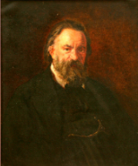

Я помню чудное мгновенье:
Передо мной явилась ты,
Как мимолетное виденье,
Как гений чистой красоты.
В томленьях грусти безнадежной,
В тревогах шумной суеты,
Звучал мне долго голос нежный
И снились милые черты.
Шли годы. Бурь порыв мятежный
Рассеял прежние мечты,
И я забыл твой голос нежный,
Твои небесные черты.
В глуши, во мраке заточенья
Тянулись тихо дни мои
Без божества, без вдохновенья,
Без слез, без жизни, без любви.
Душе настало пробужденье:
И вот опять явилась ты,
Как мимолетное виденье,
Как гений чистой красоты.
И сердце бьется в упоенье,
И для него воскресли вновь
И божество, и вдохновенье,
И жизнь, и слезы, и любовь.
У лукоморья дуб зелёный;
Златая цепь на дубе том:
И днём и ночью кот учёный
Всё ходит по цепи кругом;
Идёт направо — песнь заводит,
Налево — сказку говорит.
Там чудеса: там леший бродит,
Русалка на ветвях сидит;
Там на неведомых дорожках
Следы невиданных зверей;
Избушка там на курьих ножках
Стоит без окон, без дверей;
Там лес и дол видений полны;
Там о заре прихлынут волны
На брег песчаный и пустой,
И тридцать витязей прекрасных
Чредой из вод выходят ясных,
И с ними дядька их морской;
Там королевич мимоходом
Пленяет грозного царя;
Там в облаках перед народом
Через леса, через моря
Колдун несёт богатыря;
В темнице там царевна тужит,
А бурый волк ей верно служит;
Там ступа с Бабою Ягой
Идёт, бредёт сама собой,
Там царь Кащей над златом чахнет;
Там русский дух… там Русью пахнет!
И там я был, и мёд я пил;
У моря видел дуб зелёный;
Под ним сидел, и кот учёный
Свои мне сказки говорил.
